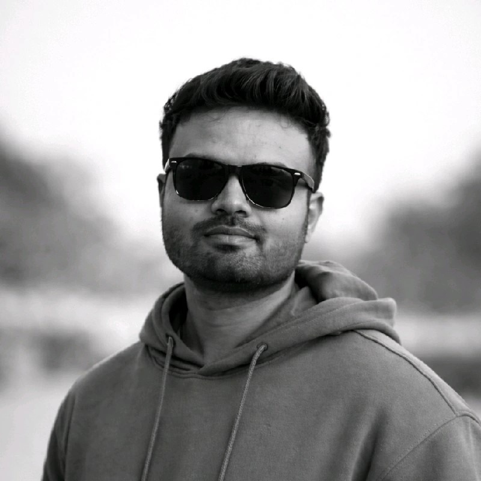

Java & Spring Boot
Backend services, APIs, and enterprise Java.
SDE 2 · PeopleStrong · Gurugram
Senior Software Engineer building scalable Java systems, cloud-native services, and applied AI.

About
For around 5 years I have turned product ideas into services people can trust. The work is mostly Java, from the first API to the system that has to keep running when traffic shows up.
I am a Senior Software Engineer at PeopleStrong in Gurugram. Before that I was a Java full stack developer in Amdocs R&D. I am a NITian, with a Master's from NIT Trichy, class of 2022.
Backend services, APIs, and enterprise Java.
System design for distributed products.
EC2, S3, Lambda, IAM, Docker, Kubernetes.
Kafka and asynchronous architectures.
Behavioral data and feature sets.
Models scored with precision, recall, ROC-AUC.
LangChain, vector databases, OpenAI APIs.
Signals that make models useful.
Skills
Projects
Experience
Gurugram, Haryana, India
Building the product that simplifies work life for over 2 million employees at 500+ large enterprises across Asia.
Pune, Maharashtra, India
Pune, Maharashtra, India
Worked in R&D on real-time billing and financial services: payment, refund, and account-balance microservices, with end-to-end feature delivery.
Pune, Maharashtra, India
Built microservices and monitored performance with Grafana, Java Flight Recorder, and JDK Mission Control to optimize the product.
National Institute of Technology, Tiruchirappalli
Built the Telecom Churn Prediction model under the guidance of Dr. S. Nickolas.
2019 – 2022 · National Institute of Technology, Tiruchirappalli
Computer Science. Education In-Charge at ACM NIT Trichy, and Coordinator at Aayaam, the Hindi Cell of NITT.
2016 – 2019 · International Institute of Professional Studies, Devi Ahilya Vishwavidyalaya, Indore
Computer Science.
AIR 6 · July 2019
Secured All India Rank 6 in the national-level MCA entrance test.
AIR 45 · July 2019
Secured All India Rank 45 in NIMCET, the national-level MCA entrance for the NITs.
Feb 2020 – May 2021 · Tiruchirappalli, Tamil Nadu
Ran technical events for ACM, the technical club of NIT Trichy, including INFOTREK '20 and ACUMEN '20, plus sessions and seminars.
Aug 2019 – May 2021 · Tamil Nadu
Organised Hindi Lits and Umang '19 under Aayaam, the Hindi Cell of NIT Trichy.
Contact